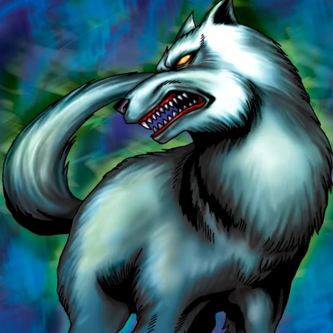

Wolf

STATS
ATK: 1200
DEF: 800DECK COST
Deck Cost per Card: 20Fusion List (21 Possible Fusions)
- Wolf + Abyss Flower = Flower Wolf
- Wolf + Cyber-Stein = Dice Armadillo
- Wolf + Cyber Commander = Dice Armadillo
- Wolf + Dancing Elf = Nekogal #2
- Wolf + Dark Plant = Flower Wolf
- Wolf + Dharma Cannon = Dice Armadillo
- Wolf + Eldeen = Nekogal #2
- Wolf + Fire Eye = Flame Cerebrus
- Wolf + Goddess with the Third Eye = Nekogal #2
- Wolf + Hinotama Soul = Flame Cerebrus
- Wolf + Jinzo #7 = Dice Armadillo
- Wolf + Key Mace = Nekogal #2
- Wolf + Mavelus = Garvas
- Wolf + Queen's Double = Nekogal #2
- Wolf + Rainbow Flower = Flower Wolf
- Wolf + Steel Scorpion = Dice Armadillo
- Wolf + Tentacle Plant = Flower Wolf
- Wolf + Vermillion Sparrow = Flame Cerebrus
- Wolf + Water Element = Nekogal #2
- Wolf + Waterdragon Fairy = Nekogal #2
- Wolf + Wings of Wicked Flame = Flame Cerebrus